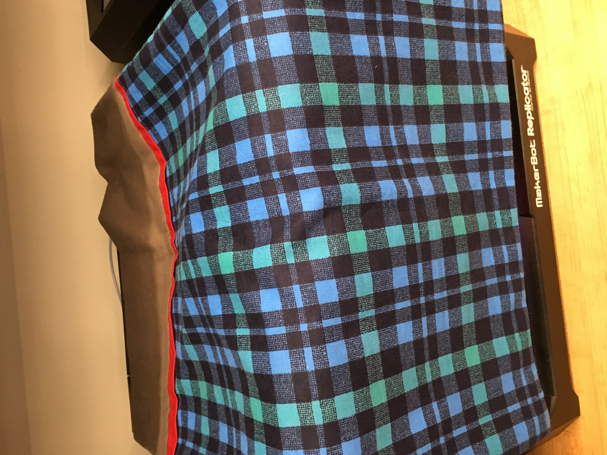

Home Page
Cycle 7
What I did
This cycle, we learned to sew and made pillowcases. I never knew how to sew before this cycle,
so this was a good learning experience. I didn't have any setbacks, and It wasn't too difficult
of a process once I figured out what I was doing.
The pillowcase I made turned out well and I can confirm after rigorous testing it is very comfortable.
